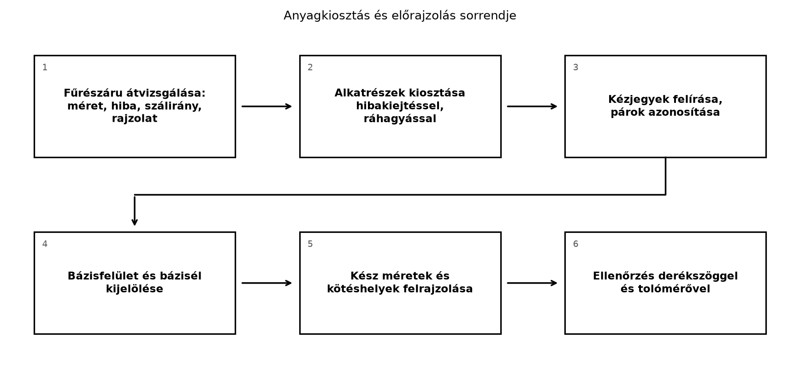

Az asztalosműhelyben gyakori jelenet: elkészül egy keret négy alkatrésze, de az összeállításnál az egyik csap nem illeszkedik a fészekbe, a keret átlója nem egyezik, vagy éppen az utolsó léc 5 mm-rel rövidebb. Ilyenkor ritkán a ragasztó vagy a fűrész a hibás. A baj általában a mérésnél, az anyagkiosztásnál vagy az előrajzolásnál kezdődött: nem ugyanabból a bázisélből mértünk, nem jelöltük meg a párokat, vagy a vágási ráhagyást kihagytuk a hosszból. Ez az alfejezet azt tanítja meg, hogyan kell a munkadarabot pontosan kimérni, a rendelkezésre álló fűrészáruból az alkatrészeket jó minőségben kiosztani, és a vágáshoz, gyaluláshoz, kötéskészítéshez szükséges jeleket úgy felvinni, hogy a későbbi műveletek ne hibából, hanem tervből dolgozzanak.
Képzelj el egy 1 240 mm hosszú, 82 mm széles bükk deszkát. A felületén van egy kisebb, benőtt göcs, a bal végén a szálirány kissé íves, a jobb szélén pedig egy hajszálrepedés. Ebből a deszkából képkeret léceit kell kimérni. Ha az asztalos átvizsgálja a darabot, a hibás végét kiejti, a göcsöt a takart oldalra igazítja, majd ceruzával jelöli, hol lesz a vágás. Az alkatrészekre felírja a kézjegyet, hogy a szétszabás után is tudni lehessen, melyik léc melyik sarokba tartozik. Az alábbi folyamatábra a legfontosabb sorrendet mutatja.

Az ábra üzenete: előbb anyagot választunk és jelölünk, csak utána rajzolunk pontos méretet. Ha a kézjegy kimarad, a szétszabott alkatrészek összekeverednek. Ha a bázisél nem rögzített, minden méret más vonatkoztatási ponthoz tartozik.
Az asztalos alapművelete a hossz, szélesség, vastagság, derékszög és szög mérése. A műhelyben több mérőeszközt érdemes egymás mellett használni, mert nem mindegy, hogy milyen pontosság és merevség kell.
Definíció. A mérőeszköz olyan eszköz, amellyel egy munkadarab méretét, szögét vagy helyzetét összehasonlítjuk egy ismert, hiteles beosztással vagy etalonnal. A mérés mindig a mértékegység és a mérőeszköz felbontásának függvényében pontos.
Mérőszalag. A mérőszalag hajlékony, rugósan visszahúzódó acélszalag, általában 3–5 m hosszú, milliméteres beosztással. A szalag elején mozgó horog ül; ez a horog a külső és belső mérés közötti váltást segíti. Külső méretnél a horog mögé akasztjuk, belső méretnél a horog élével ütköztetünk. A horog kis játéka éppen a horoglemez vastagságát egyenlíti ki, ezért nem szabad meghúzni vagy lefeszíteni. A mérőszalag előnye a hajlékonysága, hátránya, hogy ferde felületen könnyen elmozdul, és hosszú mérésnél belóg.
Colstok. A colstok merev, összecsukható mérőrúd, ma Magyarországon metrikus beosztással, jellemzően 1 vagy 2 m hosszú. Nevét a régi hüvelyk (col) mértékegységről őrizte meg, de a mai faiparban milliméterben használjuk. A merev szárak miatt ferde belső méreteknél, ajtónyílás-ellenőrzésnél és rövid műhelyi méréseknél megbízható. A csuklóknál kopás léphet fel, ezért a colstokot időnként egy pontos acélvonalzóhoz kell ellenőrizni.
Acélvonalzó. Az acélvonalzó vékony, merev, precízen beosztott szerszám, jellemzően 150, 300, 500 vagy 1 000 mm hosszú. Előrajzoláshoz jobb, mint a mérőszalag, mert a vonal mentén stabilan felfekszik, és éle mentén ceruzával vagy rajzolótűvel dolgozhatunk. A beosztást úgy olvassuk le, hogy a szem merőlegesen legyen a jelölés fölött.
Tolómérő. A tolómérő nagy pontosságú mérőeszköz, amellyel külső, belső és mélységméreteket mérhetünk. A főskála milliméterben halad, a csúszkán lévő nóniusz a milliméter törtrészét adja meg. A gyakori nóniuszos felbontás 0,1 mm, 0,05 mm vagy 0,02 mm; a digitális tolómérő közvetlenül számszerűen mutatja az eredményt.
Példa. A tolómérő főskáláján a 0 vonal a 12 mm-es jel után áll, a nóniuszon a 4. vonal esik egybe a főskála egy vonalával. Ha a nóniusz felbontása 0,1 mm, a méret:
Az ábrán a felső sáv a főskála, az alsó a nóniusz. A nóniusz 0-vonala előtti utolsó főskálavonal adja az egész millimétert (12 mm), az egybeeső nóniuszvonal sorszáma szorozva a felbontással a tört részt (4 · 0,1 mm). A 0,1 mm-es nóniusz 10 osztása 9 mm-en, a 0,05 mm-esé 20 osztás 19 mm-en fekszik. A HTML-változatban a pofa csúszkával mozgatható, a felbontás választható (0,1 / 0,05 / 0,02 mm), és a „Gyakorlás” gombbal véletlen méretet kapsz, amelyet leolvasás után a program ellenőriz.
A tolómérőt mérés előtt mindig csukott állapotban nullázzuk, és a mérendő felületet tisztára töröljük. A keményfa méretét enyhe, egyenletes szorítással mérjük, mert a túl erős szorítás a fát összenyomhatja, a túl gyenge szorítás pedig levegőt hagy a pofák alatt.
Derékszög. Az asztalos derékszög két, egymáshoz pontosan 90°-ban rögzített szárból áll. A hosszabb szár a bázisélre fekszik, a rövidebb szár a lapon átfut. Ha a munkadarab éle és a derékszög szára között bárhol fényrés látszik, az él nem derékszögű. A derékszöget rendszeresen ellenőrizni kell: rajzoljunk egy egyenest, fordítsuk meg a derékszöget, és húzzunk egy második egyenest ugyanabból a pontból; ha a két vonal nem esik egybe, a derékszög hibás.
Szögmérő. A szögmérő tetszőleges szögek mérésére és átvitelére szolgál. Az egyszerű szögmérő 0–180°, a kombinált 0–360° tartományban mozog, a digitális szögmérő tizedfokos pontossággal olvasható. A faiparban ferde csapoknál, tetőléceknél, kúpos alkatrészeknél van szerepe.
Vízmérték. A vízmérték a vízszintes és a függőleges helyzet ellenőrzésére való. A beépítésnél, polc, konyhaszekrény, ajtótok, ablak szerelésénél használjuk. A libellában lévő buboréknak a két jel közé kell esnie. A vízmértéket két irányból is meg kell nézni, mert a hosszanti és a keresztirányú dőlés egyszerre is fennállhat.
A pontos mérés önmagában nem elég. A méreteket úgy kell a fára vinni, hogy a vonal vékony, egyértelmű és a megmunkálás során is látható legyen.
Ceruza. Előrajzoláshoz közepesen kemény, hegyes ceruzát használjunk. A túl puha ceruza vastag, maszatos vonalat hagy, a túl kemény pedig belevágja a fát vagy alig látszik. A vonal vastagsága a gyakorlatban ne legyen nagyobb 0,2–0,3 mm-nél, mert a vastag vonal közepét nem tudjuk biztosan követni a fűrésznél.
Rajzolótű. A rajzolótű vékony, kemény fémhegyű eszköz. Nagyon pontos vonalat karcol a fafelületbe. A karcolt vonal vékony és nem kopik le, ezért olyan helyen használjuk, ahol a jel a vágás, gyalulás vagy csiszolás során eltűnik. A jó rajzolótűt a bázisélhez kell támasztani, és a szerszámot a haladási irányba kissé megdöntve kell húzni.
Karcoló és párhuzamvonalzó. A karcoló a rajzolótűhöz hasonló, de a műhelyben gyakran párhuzamvonalzóval vagy csapvastagság-jelölővel együtt használjuk. A párhuzamvonalzó állítható ütközővel rendelkezik, így a báziséllel párhuzamos vonalat húzhatunk állandó távolságban. Például egy ollós csap vastagságát a léc élével párhuzamosan ugyanazzal a beállítással jelölhetjük mind a négy alkatrészen.
Körző. A körző ívek, lyukkörök, osztások és fecskefarkú fogazás előrajzolásához kell. Az asztalosipari körző szárai állíthatók, hegyes végei pontosan rögzíthetők. Kör rajzolásakor először a középpontot jelöljük, majd a körzőt a kívánt sugárra nyitjuk, és a középpontból ívet húzunk.
Az ábra öt részképe: (1) a mérőszalag horga külső mérésnél kihúzott, belső mérésnél betolt helyzetben áll – a holtjáték éppen a horoglemez vastagsága; (2) a derékszöget úgy ellenőrizzük, hogy egy vonalat húzunk, majd a derékszöget átfordítva ugyanabból a pontból egy másodikat: a két vonal eltérése a hiba kétszerese (a rajzon túlozva); (3) a szögmérő tokja a bázisélen fekszik, a penge a beállított szögben; (4) a ceruza széles grafitcsíkot hagy, a rajzolótű vékony karcot; (5) a párhuzamvonalzó ütközőjét a bázisélhez nyomjuk, a karcolótű állandó távolságban húz vonalat. A HTML-változat a derékszög ellenőrzését lépésenként mutatja be hibás és pontos derékszöggel.
Sablon. Ha több azonos alkatrészt készítünk, készítsünk sablont. A sablon rétegelt lemezből, MDF-ből vagy műanyagból kivágott, pontos kontúrú minta. A sablonnal való előrajzolás gyorsabb és egyenletesebb, mint az egyenkénti méricskélés. Az első pontos darab mesterdarab lehet; erről készítjük a sablont, és a sablont használjuk a sorozatgyártásban.
Definíció. Az anyagkiosztás a rendelkezésre álló fűrészáru hosszán, szélességén és vastagságán az alkatrészek elhelyezése úgy, hogy a hibás részeket kiejtsük, a legjobb rajzolatú részeket a látható felületre rakjuk, a szálirányt figyelembe vegyük, és a ráhagyásokat is beszámítsuk. A cél a lehető legnagyobb anyagkihozatal és a kész alkatrészek megfelelő minősége.
Az anyagkiosztás lépései:
A szálirány figyelembevétele különösen fontos. A rostoknak lehetőleg az alkatrész hossztengelyével közel párhuzamosan kell futniuk. A ferde szálú, íves rostú darab gyalulásnál kiszakad, hajlításnál gyengébb, és a csap is lehasadhat. A rajzolaton a rostirány nem mindig látszik azonnal; az évgyűrűk, a bélsugarak és a hosszanti repedések lefutása segít.
Számítás. Egy 80 mm széles deszkából két darab 44 mm széles lécet szeretnél kiosztani. A fűrészvágás és a gyalulási ráhagyás összesen 10 mm. A hasznos szélesség legalább:
lenne, de csak 80 mm áll rendelkezésre. A kiosztás nem adja ki: szélesebb deszkát kell választani, vagy a léceket keskenyebbre kell tervezni, vagy csak egy lécet lehet ebből a darabból kivenni. A hibás döntés itt az lenne, ha a ráhagyást elhagynánk, és a kész méretekkel számolnánk.
Definíció. A kézjegy az alkatrészre ceruzával vagy karcolóval felírt, rövid azonosító jel. Megmutatja, hogy az alkatrész melyik termékhez, melyik összeállítási csoporthoz, melyik párhoz tartozik, és melyik oldal legyen kívül, alul vagy felül. A kézjegyrendszer a műhelyben egységes, minden munkatárs által ismert jelölési rendszer.
A kézjegyre azért van szükség, mert a szétszabott, gyalult, csapozott alkatrészek könnyen összekeverednek. A jelölést a takart felületen helyezzük el, vagy olyan részen, amelyet később megmunkálás, csiszolás vagy ragasztás eltüntet. A látható felületen a kézjegy nyomot hagyhat a pácolásnál.
Példa kézjegyrendszerre: képkeretnél a felső léc lehet
F, az alsó A, a jobb oldali J, a
bal oldali B. A párokat alsó index szerint is jelölhetjük:
J1/J2, B1/B2. A lap és a keret alkatrészeit
lehetőleg az összeállítási rajz sorszámával jelöljük, hogy a későbbi
szerelésnél is követni lehessen.
Szabály. A kézjegyet minden alkatrészre azonnal fel kell írni, amint a darabot kiosztottuk. A jelölés legyen rövid, de egyértelmű; a műhelyben ugyanaz a jel ne jelentsen két különböző dolgot. A kézjegyet és a beépítési helyet a rajzon is rögzítsük.
A pontos mérés és rajzolás alapja a bázisfelület és a bázisél. A nyers fűrészáru ritkán teljesen sík és szögletes; ha minden méretet más-más felületről mérünk, a hibák összeadódnak.
Definíció. A bázisfelület a munkadarabon kiválasztott, lehetőleg a legjobban illeszkedő, sík nagyobb lap. A bázisél a bázisfelületre merőleges, lehetőleg egyenes hosszanti él. Minden további mérést, jelölést és megmunkálást ebből a bázisfelületből és bázisélből végzünk.
A bázisfelületet a műhelyben általában hosszú, kissé hullámos vonallal jelölik; a bázisélt pedig folytonos egyenes vonallal a bázisfelületen. A pontos jelölés nem szabványos országos előírás, hanem műhelyi gyakorlat; a lényeg, hogy a műhelyben mindenki ugyanazt értse rajta.
Az ábra a keret hátoldalát (takart felületét) mutatja, ezért hátulról nézve a jobb oldali léc (J) balra látszik. Minden lécen ott a kézjegy és a két sarok párszáma; összerakáskor a sarkoknál a két találkozó léc azonos száma kerül egymás mellé. A (C) részkép egy léc bázislapját (hullámos vonal) és bázisélét (egyenes vonal az él mellett) mutatja. A HTML-változatban a keret csúszkával szétszedhető és összerakható.
A fára rajzolt jelek akkor jók, ha a vágásnál, gyalulásnál, csapozásnál egyértelműen mutatják, hol van a kész méret és hol a kiejtendő rész.
Eljárás. A kézi előrajzolás sorrendje:
A fent leírt módszer a rajz–anyag–művelet hármas gyakorlati kezdete: a rajz méretei szerint jelöljük az anyagot, a jelölés pedig a műveletet vezérli. A jó előrajzolás nem plusz munka, hanem a későbbi hibák megelőzése.
A legtöbb előrajzolási hiba nem a mérőeszköz rossz felbontásából, hanem rossz használatból származik.
Szabály. Mérés előtt nézd meg a munkadarabot, a mérőeszközt és a rajzot is. A rajzon a méret mm-ben van, a mérőeszközön mm-ben mérünk, a munkadarabon mm-t jelölünk. Az ellenőrzéshez mindig ugyanazt a mérőeszközt használd, amellyel a jelölést végezted.
Szabvány. A műhelyi mérőeszközök pontossági követelményeit, használatát és időszakos kalibrálását a minőségirányítási szabványok, a mérőeszköz-gyártói adatlapok és a hatályos mérésügyi előírások szabályozzák (ellenőrizendő: aktuális mérésügyi jogszabály, metrológiai szabvány). A faipari rajz méretmegadása az Méretarány és méretmegadás a faipari rajzon alfejezet szerint mm-ben történik, a rajzon a mm-t nem írjuk ki; a műhelyben viszont a mérőeszköz skáláján a mm-es felbontást olvassuk le. A konkrét tűréshatárokat a munkarajz és a gyártási utasítás adja meg; az itt megadott 0,2–0,5 mm-es előrajzolási pontosság tanulási tájékoztató, nem szabványos általános előírás.
Cél: egy képkeret négy, ollós csappal szerelt léce közül egy keretléc pontos kimérése, kiosztása, kézjeggyel ellátása és előrajzolása.
Anyag: bükk vagy tölgy fűrészáru, kész méret például 300 × 60 × 22 mm; hosszráhagyás 8 mm, szélességi ráhagyás 5 mm (tájékoztató, a fűrészelési és gyalulási mód szerint ellenőrizendő).
Szerszámok: mérőszalag, colstok, acélvonalzó, tolómérő, derékszög, szögmérő, ceruza, rajzolótű, párhuzamvonalzó, körző, kézjegyminta, gyalupad.
Biztonság. A rajzolótű és a körző hegye ne irányuljon a kezed vagy a társad felé. A colstok csukódáskor becsípheti az ujjat, ezért a szárakat lassan, egymás után hajtsd be. Az acélvonalzó sérült, sorjás éle vágási sérülést okozhat; a sorját reszelővel tüntesd el. A munkadarabot a gyalupadon stabilan támaszd alá, hogy mérés közben ne mozduljon el.
Lépések:
A mérés és előrajzolás minőségét a következőkkel ellenőrizzük:
Ha eltérést találunk, ne a régi vonalra rajzoljunk újra, hanem töröljük vagy karcoljuk át a hibás jelet, és egyértelműen jelöljük a javított méretet. A zavaros jelölést jobb letisztázni, mert a későbbi művelet félreolvashatja.
Hiba. A kiosztott alkatrész a fűrészelés után
rövid.
Ok: a hosszráhagyás nem lett beszámítva, vagy a
mérőszalag horogja sérült.
Helyes gyakorlat: a ráhagyást a kiosztásnál mindig add
hozzá; a mérőszalagot nullapont-ellenőrzéssel kezdd.
Hiba. A keret csapjai a szemközti léceken nem
tükörképi helyzetbe kerülnek.
Ok: a párokat egyenként, nem tükörképben
rajzolták.
Helyes gyakorlat: a jobbos és balos alkatrészt egymás
mellett, közös bázisélből, tükörjelöléssel rajzold.
Hiba. A vonal mentén fűrészelve a darab lejt, és a
végén 1 mm-rel eltér.
Ok: a vonal nem derékszögű, vagy a derékszög szárai nem
feküdtek fel teljesen a bázisélre.
Helyes gyakorlat: a derékszög hosszabb szárát keményen
nyomd a bázisélre; a vonalat a rövidebb szár tövétől indítsd.
Hiba. A gyalulás után kiderül, hogy az alkatrész
ferde, mert hol az egyik, hol a másik lapról mérték.
Ok: nem jelöltek ki bázisfelületet.
Helyes gyakorlat: minden mérés előtt rögzíts egy
bázisfelületet és bázisélt, és azt a jelölést már ne változtasd.
Hiba. A szép rajzolat a késztermék hátoldalára
kerül, a göcsös felület elöl marad.
Ok: az anyagkiosztásnál nem jelölték meg a látható
oldalt.
Helyes gyakorlat: az anyagkiosztás elején karcolj vagy
írj L (látható) jelet a mutatós oldalra, és a kézjegyet a
takart oldalra.
Egy asztalos tanuló konyhaajtó keretét készítette el. A rajz szerint a keret két oldalsó léce 720 mm, a két vízszintes léce 320 mm hosszú volt, a sarok ollós csappal csatlakozott. A tanuló kimérte a darabokat, lefűrészelte, kigyalulta, de a csapok rovátkáit nem tükörben rajzolta. A bal oldali lécen a csap hátrafelé mutatott, a jobb oldalin ugyancsak, így az összeállításnál az egyik sarok nem tudott összekapcsolódni. Az oktató ezután bevezette a kézjegyrendszert: minden sarok kapott egy betűt, a párokat tükörben rajzolták, és a kézjegyet a takart felületre írták. A tanuló újra kiosztotta a léceket, a kézjegyet minden darabra felvitte, és a csapok tükörben való rajzolásával a keret pontosan illeszkedett. Tanulság: a mérés és a rajzolás a kézi műveletek kiindulópontja; a rossz anyagkiosztás és a hiányzó kézjegy a drága faanyagban jelentkező hibaként jön vissza.
1. feladat (A). Sorold fel a mérőszalag és a colstok közötti legfontosabb különbségeket, és mondd meg, mikor melyiket választanád.
2. feladat (A). A tolómérő főskáláján a 0 vonal a 12 mm-es jel után áll, a nóniuszon a 4. vonal egyezik, a felbontás 0,1 mm. Mennyi a méret?
3. feladat (B). Egy 2 100 mm hosszú fenyő deszkából 5 darab 390 mm kész hosszúságú lécet kell kiosztani. Minden vágásnál 8 mm hosszráhagyás szükséges. Számold ki, hány mm anyag fogy el, és mennyi marad. Biztonságos-e a kiosztás, ha a befogáshoz legalább 10 mm maradékot szeretnénk hagyni?
4. feladat (B). Egy 95 mm széles deszkából 3 darab 30 mm kész szélességű lécet szeretnél kiosztani. A szélezési és vágási ráhagyás összesen 18 mm. Kiosztható-e a 3 darab? Ha nem, hány darab fér ki?
5. feladat (C). Képkerethez egy jobbos és egy balos oldallécet kell előrajzolni. Írd le, hogyan kerülhető el, hogy két balos léc keletkezzen, és milyen kézjegyet használnál.
6. feladat (D). Készíts rövid előrajzolási tervet egy 300 × 400 mm-es képkerethez, 4 darab 60 × 22 mm-es lécből. Add meg: az anyagkiosztás sorrendjét, a szükséges mérő- és rajzolóeszközöket, a bázisjeleket, a kézjegyeket és a végső ellenőrzés módját.
18 + 6 · 0,05 = 18,30 mm.A mérőszalag hajlékony, hosszú, rugós, görbe felületeken is felfekszik, de belóg és mozoghat; a colstok merev, rövid, csuklós, ahol a méret pontosan átvihető. Helyszíni, íves, nagyobb távolságra mérőszalagot; műhelyi, merev, rövid belső méretre colstokot választanék.
Adott: 5 léc, kész hossz 390 mm, ráhagyás 8 mm/léc, deszkahossz 2 100
mm.
Keresett: összes anyagigény és maradék.
Képlet: n · (kész hossz + ráhagyás) = anyagigény.
A deszkából fennmaradó anyag:
A maradék 110 mm, ami nagyobb a 10 mm-es minimális befogási igénynél, tehát a kiosztás biztonságos, ha a deszka végén is legalább 10 mm-t tudunk megfogni.
3 léc kiosztása:
A deszka csak 95 mm széles, tehát a 3 darab nem fér ki. Két léc kiosztása:
ami kisebb 95 mm-nél, tehát 2 darab fér ki. A harmadik léchez másik deszkát kell választani, vagy a kész szélességet kell szűkíteni.
A jobb és bal oldallécet egymás mellé, közös bázisélből, tükörképpen
kell rajzolni. A bázisél mindkét darabnál ugyanarra az oldalra kerül, de
a csap helyét úgy jelöljük, hogy a két darab egymás tükörképe legyen.
Kézjegynek például J és B jelet használunk, a
párokat J1/J2, B1/B2 jelöli; a jel a takart
felületre kerül. Így nem keletkezhet két balos léc.
A terv:
L jellel jelöljük.F, alsó A, jobb
J, bal B; mindegyiken a takart oldalon.A mérés és az előrajzolás a kézi fafeldolgozás kiindulópontja. A mérőeszközök közül a mérőszalag hajlékony, a colstok merev, az acélvonalzó pontos, a tolómérő 0,1–0,02 mm felbontással mér, a derékszög a 90°-ot, a szögmérő a ferde szögeket, a vízmérték a beépítési helyzetet ellenőrzi. A rajzolóeszközök – ceruza, rajzolótű, karcoló, párhuzamvonalzó, körző, sablon – közül mindig a munkadarabhoz illőt választjuk. Az anyagkiosztás során a fűrészárut átvizsgáljuk, a hibákat kiejtjük, a látható felületeket a szép rajzolatú részekre osztjuk, a ferde szálú és göcsös szakaszokat kerüljük. A kézjegy az alkatrészek összetartozását rögzíti a takart felületen. A pontos méreteket bázisfelületből és bázisélből kell felvinni, páros alkatrészeknél tükörben rajzolva. A mérési hibák leggyakoribb okai a kopott horog, a ferde rálátás, a vastag ceruzavonal, a hiányzó bázis és a ráhagyás kihagyása. Továbbvitt eredmény. Az itt bemutatott anyagkiosztást, kézjegyet, bázisjelölést és előrajzolást használja a Kézi fűrészek és a kézi fűrészelés technológiája alfejezet; a bázisfelület és bázisél rendszer pedig a Gyaluk és a kézi gyalulás: síkgyalulás, derékszög, méretre gyalulás során vezérli a méretre munkálást.
Felhasznált forrástípusok:
- Faipari szakmai és tanműhelyi mérőeszköz-ismeret, az asztalos
gyakorlatban általánosan elterjedt használati szabályok.
- A mérőeszközök pontosságára és kalibrálására vonatkozó követelmények
forrása a hatályos mérésügyi jogszabály, a minőségirányítási szabványok
és a mérőeszköz-gyártói adatlapok; a pontos hivatkozások
ellenőrizendők.
- A rajzi mm-konvenció forrása az Méretarány és
méretmegadás a faipari rajzon alfejezetben használt MSZ EN ISO 129
sorozat; a pontos kiadás ellenőrizendő.
- A fűrészáru-hibákat az A fa alaki és
szövetszerkezeti hibái alfejezet tárgyalja; a hibakiejtési
ráhagyások tájékoztató gyakorlati értékek.